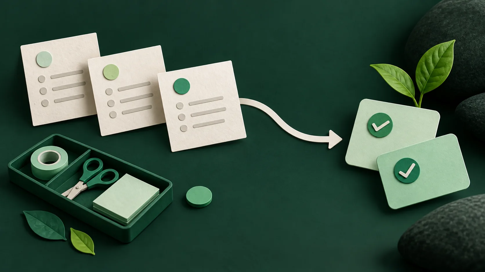

Taller d’oportunitats d’IA
En una sessió de treball identifiquem tasques repetitives i triem els primers usos d’IA que val la pena provar.
THE APPS GARDEN / Serveis
Entenem els teus processos, identifiquem oportunitats i t’acompanyem fins que la solució funciona en el dia a dia.
En una sessió de treball identifiquem tasques repetitives i triem els primers usos d’IA que val la pena provar.
Seguim un procés de principi a fi, comparem opcions i definim un pla amb eines, esforç i impacte estimat.
Muntem el flux amb casos reals, l’ajustem amb l’equip i documentem com continuar fent-lo servir de manera autònoma.
L’equip practica amb tasques del dia a dia i aprèn a demanar, comprovar i aplicar resultats de la IA amb criteri.
02 / El nostre enfocament
Definim qui utilitza cada eina, quan intervé, quina informació necessita i quins passos continuen sent humans. Després provem el flux amb l’equip i documentem com mantenir-lo.

03 / Com treballem
Un camí clar fins que l’equip pot continuar de manera autònoma.
Parlem amb l’equip i analitzem com treballa avui.
Prioritzem oportunitats i triem les eines adequades.
Configurem, provem i ajustem la solució amb casos reals.
Formem l’equip, documentem el flux i fem el traspàs.
THE APPS GARDEN / FAQ
No. Traduïm el que pot fer la IA a processos concrets per a la teva empresa.
No. Som independents i triem les eines segons el procés, l’equip, el cost i la privacitat.
Ens centrem a configurar eines existents. Quan aporta valor, afegim automatitzacions i integracions senzilles.
Formem l’equip, documentem el flux i fem el traspàs perquè pugueu continuar sense dependre de nosaltres.
THE APPS GARDEN / AI
Comencem per un procés concret i busquem una manera més senzilla de resoldre’l.
Primera conversa sense compromís.